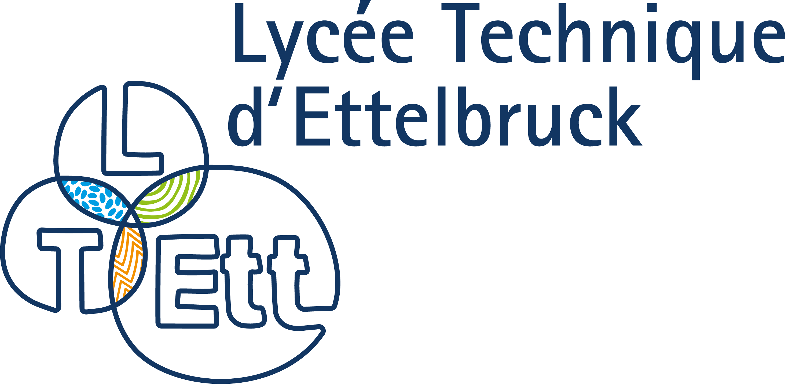

🛠️ Windmobile @ Nohaltegkeetsdeeg
Workshops & Visites Guidées um LTEtt
📅 Januar 2027

D'Iddi ass intern Aktivitéiten a praktesch Workshops fir Schüler vum LTEtt ze organiséieren an d'Themen Wandenergie, Solarenergie, Waasserkraaft, Mobilitéit, Technik an Nohaltegkeet konkret erliewbar ze maachen.
Schüler aus GSE an Smart Technologies kënnen aktiv Workshops preparéieren, Experimenter erklären an déi méi jonk Schüler encadréieren. Domat ginn si selwer zu Multiplikatoren an droen de Windmobile-Spirit weider.
Experimenter mat den zwou selwer gebauten Wandkanäl, Loftstréimungen, Profiller an Aerodynamik. Schüler kënnen testen, wéi Wand op Formen a Rotorblieder wierkt.
Mini-Wandmillen opbauen, Energieproduktioun erklären, C-Rotor, Piggott-Systemer an DIY-Wandenergie weisen.
PV-Moduler, Solar-Ladung, Offgrid-Systemer a praktesch Solar-Experimenter presentéieren.
Mam bekannte Stroumvëlo an dem neie Modell vum Weeler kënnen d'Schüler kierperlech erliewen, wéi vill Energie gebraucht gëtt, fir Apparater ze bedreiwen.
Am Kader vun der Nohaltegkeetswoch kéinten och geféiert Energie-Visiten um LTEtt organiséiert ginn. Dës Visitte weisen, datt Nohaltegkeet net nëmmen Theorie ass, mee um LTEtt zanter ville Joren duerch konkret technesch Installatiounen an Infrastruktur gelieft gëtt.
Visite vun enger vun den éischte Photovoltaik-Anlagen op engem ëffentleche Gebai zu Lëtzebuerg. Dës Installatioun besteet zanter iwwer 20 bis 25 Joer a steet fir richteg Pionéieraarbecht am Beräich vun erneierbaren Energien um LTEtt.
Visite vum Pédalec-Port mat Vëlosinfrastruktur, Ladeberäich a Photovoltaik-Anlag. Hei kënne Solarenergie, Elektromobilitéit an intelligent Energiebenotzung zesumme gewise ginn.
Visite vun der Piscine, dem Sportskomplex an der grousser Photovoltaik-Anlag. Hei gëtt däitlech, wéi vill Energie grouss Infrastrukture brauchen a wéi erneierbar Energieproduktioun an Energieeffizienz konkret matenee verbonne kënne ginn.
Als wichtegen Zousaz soll och dat Waasserrad, dat um LTEtt disponibel ass, an d'Visite guidée agebonne ginn. Nieft Wand a Sonn gëtt domat och d'Thema Waasserkraaft konkret a visuell erliefbar gemaach.